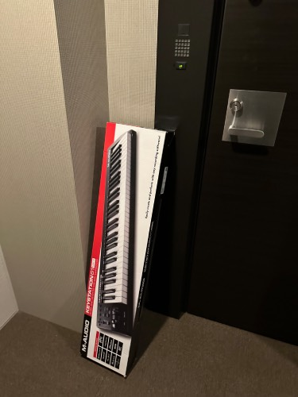
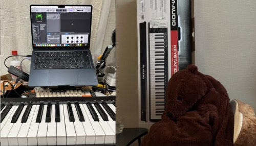

2024-05-23

4살쯤에서부처 고등학교진학전까지
피아노를 계속 배웠는데 그땐 동네 피아노학원에서 그저 피아노 후두려패는 느낌으로,
오래하다보니 배토벤 쇼팽정도까지 두들기다가 그만두니
왜 이걸로 대학진학을 안해? 라는 소리를 들었던것 같다.
예고를 가라, 과고를 가라, 어디를가라,한의대를가라,
뭐를해라, 이런게 너무싫고
과학은 좋은데 수학은 귀찮고(아무도 흥미를
가질 수 있도록 가르쳐준 적이 없는게 맞을듯?),글쓰기도 언어도 외국어도 그냥저냥 좋지만
꼭해야겠다는 생각도 없어서
어쩌다보니 한 1년 대충 미술입시배워서 서양화전공을 하게 된것 같음.
서양화보다는 그래픽에 관심이 많았는데,
지금와서 생각해보면, 단순히 맥킨토시 만져보고싶어서 들어간 디자인과 수업에서 교수님이,
자기도 회화과 출신이라며 미국공대로 유학가면 좋을거 같다고 추천해준게
아마 내가 살면서 들은 가장 그럴듯한 조언이었지싶다.
여튼 뭐 하겠는지 모르겠고 자꾸 일본쪽으로 도돌이표처럼 돌아오는 내 인생 ㅋㅋ
남들처럼 딱히 일본문화에 관심이 있는것도 아닌데 모르겠다
어쨋든 전부터 남들 피아노치는모습보면 오 나도 치고싶다
근데 시끄러워서 못치잖아. 이래서 기타도 사보고
했지만 재미는 없고 ㅇ.ㅇ
빅카메라나 요도바시 지나가면 가끔보이는 키보드들 보면서 저런거 괜찮은가 생각만 했는데
급 키보드를 삼
88키는 너무 크고 그만큼 쓸일도 없을거같고
61이 내 책상 폭과 같길래 긴가민가하고 사봤는데
맥북에도 꽂으니 바로연결되고
아이패드에도 카메라 어뎁터로 연결하니 바로연결됨
옼ㅋㅋ
이걸 왜 이제삿지싶다
